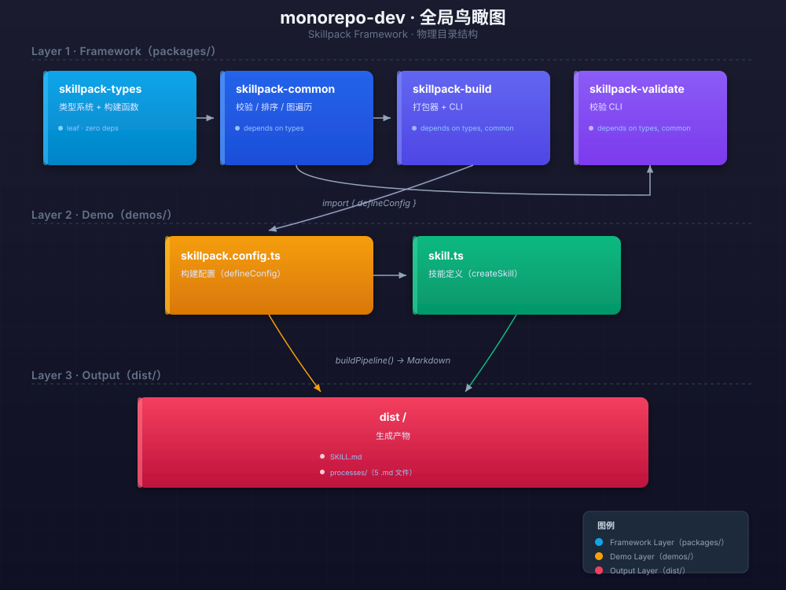
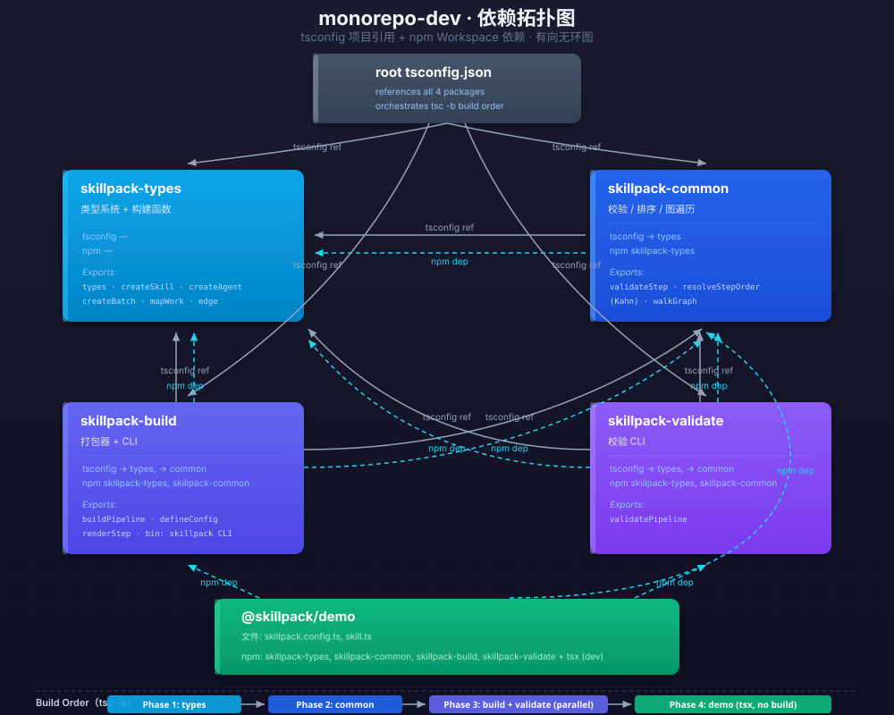
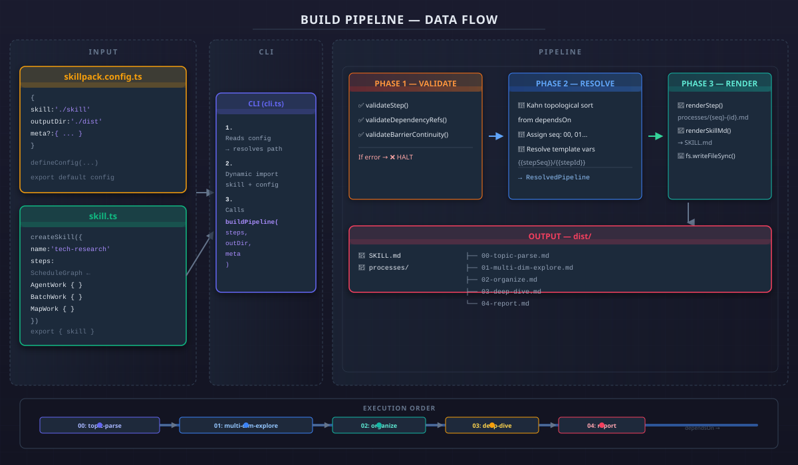
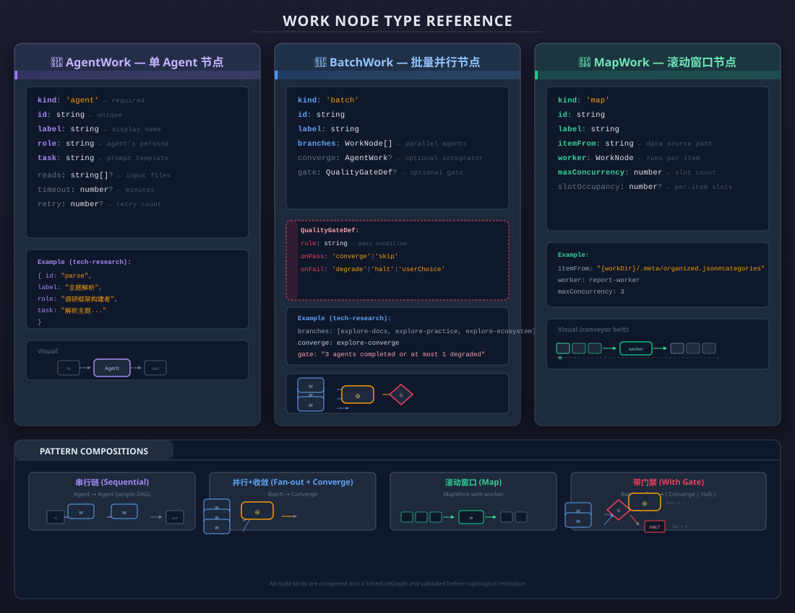

🔧 skillpack monorepo
一套用于定义和构建 LLM Markdown Skill 管线的开发框架。
本文档以 6 张结构图完整讲述 monorepo-dev 的架构、数据流、类型系统和开发操作。
全局鸟瞰 — 项目物理结构
这张图是你应该记住的"地图"。整个 monorepo 只有 18 个源文件，分三层：框架库（packages/）、示例项目（demos/）、构建产物（dist/）。你不需要记每个文件，只需要知道"改框架去 packages/，改技能去 demos/，看结果去 dist/"。

包依赖拓扑 — 谁依赖谁
这是项目的"承重墙"。tsconfig 的 project references 保证了构建顺序总是 types → common → build+validate。npm workspaces 让每个包互相可见。记住：types 是基石，common 是逻辑核心，build/validate 是消费者。绝对不允许反向依赖。

构建流水线 — 输入到输出的完整路径
这是整个 skillpack 的"发动机"。从 skillpack.config.ts 声明配置 → CLI 动态加载 → buildPipeline 三阶段处理（校验→拓扑排序→渲染）→ 最终写入磁盘。三次校验确保不会产出错误文件，Kahn 排序保证步骤永远按正确的依赖顺序执行。

节点类型参考 — 三种调度原语
调度是 skill 的核心复杂度。我们只暴露 3 种节点：Agent（单兵）、Batch（组团并行）、Map（流水线）。用这 3 种原语 + 有向边，你可以组合出任意调度模式。这张图就是你的"API 速查表"——写 skill.ts 时对照着看。

技能定义解剖 — createSkill 内部结构
这张图是你写 skill.ts 时的"参考图纸"。createSkill 包裹整个定义，StepDefinition 是每一步的蓝本。注意每个字段的 required/optional 标记——id/dependsOn/schedule/writes 是必须的，barrier/reuse/degrade 是按需的生命周期钩子。红色标注的就是最常见的错误来源。

开发者循环 — 三种工作模式
这张图教你"如何在这个项目里干活"。有三种场景，对应三个不同长度的循环：改框架（最慢，需 rebuild）、改 skill（最快，零构建）、全量重建（最干净）。日常 90% 的工作在 Loop B 里——你只需改 skill.ts 然后 npm run demo，秒级反馈。